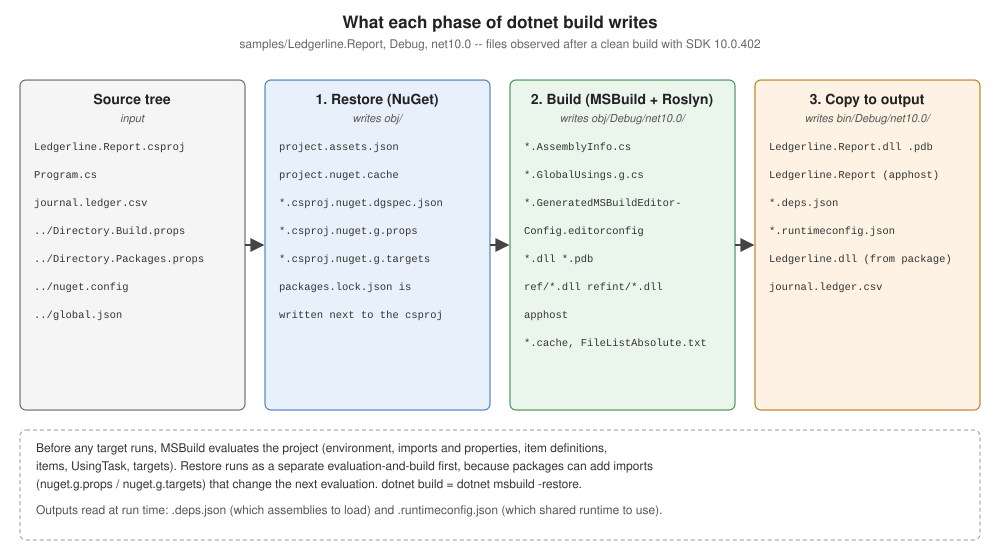

How a .NET Build Works
|
This content was generated with the assistance of AI and should be verified against the official documentation before being relied on in production. |
Every .NET build, whatever starts it, follows the same path: the dotnet host picks an SDK, NuGet restores the
packages, MSBuild evaluates the project and then executes its targets, and the compiler and copy tasks fill obj/ and
bin/. Knowing this path is what turns build errors from mysteries into lookups: an "SDK not found" error belongs to the
first step, NETSDK1004 to the second, a property that "doesn’t take effect" to the third, and a target that runs at the
wrong moment to the fourth. This page follows one build of the Ledgerline consumer app,
samples/Ledgerline.Report, through every step, with .NET SDK 10.0.402 (MSBuild 18.9.15, NuGet 7.9.0). The short
introduction to dotnet build is in
Build and Tooling; the full option list is on
Restore, Build and Clean.

The phases at a glance
| Phase | What happens | Owner | Typical failure |
|---|---|---|---|
Host and SDK resolution |
|
.NET host |
"A compatible .NET SDK was not found" |
Restore |
The |
NuGet (as MSBuild targets) |
|
Startup |
MSBuild parses the command line and response files, sets global properties, chooses loggers and nodes |
MSBuild |
|
Evaluation |
Six passes build the in-memory project: properties, imports, item definitions, items, |
MSBuild (+ the project SDK’s |
|
Execution |
Targets run in dependency order; tasks call the compiler, copy files, generate |
MSBuild + Roslyn + SDK tasks |
|
Outputs |
|
SDK targets |
stale or locked files ( |
Step 1 — the host picks an SDK
dotnet on the PATH is the muxer: a native host that decides whether its first argument is a command
(build, test) or an application (dotnet app.dll). For a command it needs an SDK. It looks for a global.json in
the current directory and each parent; if one exists, its sdk.version and sdk.rollForward choose among the installed
SDKs, otherwise the newest installed SDK is used. The chosen SDK decides everything else on this page: the MSBuild
version, the NuGet client, the C# compiler, the project SDKs and the default target framework of new projects.
Ledgerline pins the SDK in global.json (the keys are explained on
Installing and Selecting SDKs):
{
"sdk": {
"version": "10.0.402",
"rollForward": "latestPatch",
"allowPrerelease": false
},
"test": {
"runner": "Microsoft.Testing.Platform"
}
}When the pinned SDK is not installed — the classic case is a global.json updated by a developer whose CI agent still
has the older SDK — the host fails before MSBuild even starts. With only SDK 10.0.402 installed, a global.json that
asks for 10.0.500 gives:
The command could not be loaded, possibly because:
* You intended to execute a .NET application:
The application 'build' does not exist or is not a managed .dll or .exe.
* You intended to execute a .NET SDK command:
A compatible .NET SDK was not found.
Requested SDK version: 10.0.500
global.json file: ~/ledgerline/global.json
Installed SDKs:
Install the [10.0.500] .NET SDK or update [~/ledgerline/global.json] to match an installed SDK.
Learn about SDK resolution:
https://aka.ms/dotnet/sdk-not-found
10.0.402 [<dotnet>/sdk](The installed-SDK list is written to standard output after the standard-error text, which is why it appears at the end when both streams go to the same terminal.)
Step 2 — restore
Compilation needs to know which assemblies every package contributes for the target framework, so a build starts with a
restore. dotnet build, run, test, pack and publish all run it implicitly; the documentation describes
dotnet build as equivalent to dotnet msbuild -restore. -restore makes MSBuild run the Restore target in a
separate evaluation and build first and then re-evaluate the project for the requested targets, because restore
generates files that the second evaluation imports.
For each project, NuGet:
-
reads the
PackageReference,PackageVersion(Central Package Management) andProjectReferenceitems of every target framework, plusnuget.configfor sources and source mapping; -
resolves the whole graph (lowest applicable version, nearest wins — see Dependency Resolution);
-
takes each package from the global-packages folder (
~/.nuget/packages) or downloads it, through the HTTP cache, from the mapped source; -
writes the restore outputs into
obj/.
| File | Contents |
|---|---|
|
The resolved graph per target framework: every package, its version, the exact |
|
Generated MSBuild files that import each package’s |
|
The dependency-graph specification restore was computed from (inputs). |
|
A hash of the inputs; when it matches, the next restore is a no-op ("All projects are up-to-date for restore"). |
|
Only when |
Running the build with the obj/ folder deleted but --no-restore shows what happens without the assets file:
rm -rf obj
dotnet build --no-restore -tl:off<sdk>/Sdks/Microsoft.NET.Sdk/targets/Microsoft.PackageDependencyResolution.targets(266,5): error NETSDK1004: Assets file '~/ledgerline/samples/Ledgerline.Report/obj/project.assets.json' not found. Run a NuGet package restore to generate this file. [~/ledgerline/samples/Ledgerline.Report/Ledgerline.Report.csproj]
Build FAILED.
…
0 Warning(s)
1 Error(s)The opposite mistake is quieter: changing a package version and then building with --no-restore uses the old
assets file, so the build succeeds against the previous version. Use --no-restore only right after an explicit
dotnet restore in the same job, which is exactly what CI does
(CI Builds and Caching).
Step 3 — MSBuild startup
MSBuild starts by processing its command line: the project or solution to build (when none is given, the single
project or solution file in the current folder; MSB1011 if there are several), global properties from -p:, the
targets from -t:, loggers, verbosity and the node count. It also reads response files: MSBuild.rsp next to
MSBuild.exe and Directory.Build.rsp in the project folder or any parent. dotnet build adds its own switches before calling
MSBuild in-process; a diagnostic log (-v:diag) shows the full command line it built. For
dotnet build --no-restore -tl:off in Ledgerline.Report:
dotnet build --no-restore -tl:off -v:diag | grep "Command line arguments" Command line arguments = "<dotnet>/sdk/10.0.402/MSBuild -maxcpucount --verbosity:m -tlp:default=auto --property:NuGetInteractive=false --verbosity:diag --nologo -restore:false -tl:off -consoleloggerparameters:Summary -tlp:DISABLENODEDISPLAY"-maxcpucount without a number (parallel build on all cores), minimal verbosity, the summary at the end and the
Terminal Logger defaults are the CLI’s additions; the later --verbosity:diag wins over the earlier --verbosity:m.
Without --no-restore the same line contains -restore instead of -restore:false, plus -restoreProperty: switches
(EnableDefaultCompileItems=false and the other default-item globs) that make the separate restore evaluation cheaper
by skipping the file globs restore does not need.
Global properties are the first trap of a build: a property passed with -p: (or set by Visual Studio, or by a parent
project through the MSBuild task) overrides every assignment to that property in every project file, silently,
unless the project uses TreatAsLocalProperty. dotnet build -p:Version=9.9.9 therefore wins over the <Version> in
Ledgerline.csproj.
Source: MSBuild: Startup, MSBuild: Directory.Build.rsp.
Step 4 — evaluation: six passes
Evaluation reads the project and every file it imports and builds an in-memory model. Nothing is built yet. It runs in six passes, and the pass order — not the order of the XML — is what decides which value a property or an item sees:
-
Environment variables become properties (
$(PATH),$(HOME),$(GITHUB_ACTIONS)). -
Imports and properties, in document order, with each
<Import>expanded in place. Only properties outside targets are set. A property can read properties defined earlier, but not later ones, and no items at all. -
Item definitions (
ItemDefinitionGroup: default metadata for an item type). -
Items outside targets, with their metadata. Because this pass comes after the whole property pass, items see the final value of every property.
-
UsingTaskelements declare the tasks available to targets. -
Targets: the target objects are created; none runs.
A ten-line project shows the consequences of the order:
<Project>
<!-- Pass 2 (properties): JournalFolder is read before it is defined, so it is empty here. -->
<PropertyGroup>
<EarlyCopy>[$(JournalFolder)]</EarlyCopy>
<JournalFolder>journals</JournalFolder>
<LateCopy>[$(JournalFolder)]</LateCopy>
<!-- Items are evaluated after all properties, so this is the literal text, not a file list. -->
<JournalCount>@(Journal->Count())</JournalCount>
</PropertyGroup>
<!-- Pass 4 (items): runs after every property, so it sees the final JournalFolder. -->
<ItemGroup>
<Journal Include="$(JournalFolder)/*.csv" />
</ItemGroup>
<Target Name="Show">
<!-- Execution phase: properties inside targets see the items. -->
<PropertyGroup>
<CountInTarget>@(Journal->Count())</CountInTarget>
</PropertyGroup>
<Message Importance="high" Text="EarlyCopy=$(EarlyCopy) LateCopy=$(LateCopy)" />
<Message Importance="high" Text="JournalCount (evaluation)=$(JournalCount)" />
<Message Importance="high" Text="CountInTarget (execution)=$(CountInTarget)" />
<Message Importance="high" Text="Journal=@(Journal)" />
</Target>
</Project>-getProperty and -getItem (MSBuild 17.8 and later) print evaluated values without running any target, which is
the quickest way to see what evaluation produced:
dotnet msbuild evaluation-order.proj -getProperty:EarlyCopy -getProperty:LateCopy -getProperty:JournalCount
dotnet msbuild evaluation-order.proj -t:Show -nologo -v:m{
"Properties": {
"EarlyCopy": "[]",
"LateCopy": "[journals]",
"JournalCount": "@(Journal->Count())"
}
}
EarlyCopy=[] LateCopy=[journals]
JournalCount (evaluation)=2
CountInTarget (execution)=2
Journal=journals/2026-01.csv;journals/2026-02.csvEarlyCopy is empty because the property pass is strictly sequential. JournalCount shows a subtler rule: an item
reference inside a property defined outside a target is stored as literal text (the evaluated value really is
@(Journal->Count())), and it is expanded only later, wherever the property is used during execution — which is why
the Message task still prints 2. Relying on this lazy expansion is fragile; compute item-derived values inside a
target, as CountInTarget does.
The same order explains two classic bugs:
-
Reading
$(TargetFramework)inDirectory.Build.props.Directory.Build.propsis imported at the very start ofMicrosoft.Common.props, before the project body setsTargetFramework. In a single-target project and in the outer build of a multi-targeted one the property is therefore still empty there; only in the inner, per-framework builds (whereTargetFrameworkis a global property) does it have a value. The same condition thus works for one project and silently fails for another. Put TFM conditions inDirectory.Build.targetsor in the project file (demonstrated on Customizing the Build). -
Items evaluated before the property they use is set — this one actually cannot happen within one project, because all properties are evaluated first; when an item seems to use a stale value, the property was set inside a target (execution phase) after the item was evaluated.
Source: MSBuild: Evaluate environment variables, Evaluate imports and properties, Evaluate item definitions, Evaluate items, Evaluate UsingTask elements, Evaluate targets.
What a real project imports
An SDK-style project file is short because <Project Sdk="Microsoft.NET.Sdk"> adds two implicit imports, Sdk.props
at the top and Sdk.targets at the bottom, and those pull in the rest. dotnet msbuild -pp:<file> writes the whole
evaluated project, every import inlined with a comment naming its file. For Ledgerline.Report that is 116 distinct
files; the ones that matter most, in import order (numbers are positions in that list):
dotnet msbuild -pp:report.pp.xml 1 <sdk>/Sdks/Microsoft.NET.Sdk/Sdk/Sdk.props
2 <sdk>/Current/Microsoft.Common.props
3 ~/ledgerline/Directory.Build.props
5 ~/ledgerline/samples/Ledgerline.Report/obj/Ledgerline.Report.csproj.nuget.g.props
7 ~/ledgerline/Directory.Packages.props
… (Microsoft.NET.Sdk.props, DefaultItems.props, BundledVersions.props, SourceLink props, WindowsDesktop props)
--- the project file body is evaluated here ---
31 <sdk>/Sdks/Microsoft.NET.Sdk/Sdk/Sdk.targets
59 <sdk>/Microsoft.CSharp.targets
62 <sdk>/Roslyn/Microsoft.CSharp.Core.targets
65 <sdk>/Microsoft.Common.targets
66 <sdk>/Microsoft.Common.CurrentVersion.targets
73 ~/ledgerline/samples/Ledgerline.Report/obj/Ledgerline.Report.csproj.nuget.g.targets
74 ~/.nuget/packages/ledgerline.build/1.0.0/buildTransitive/Ledgerline.Build.targets
75 ~/ledgerline/Directory.Build.targets
77 <sdk>/Sdks/Microsoft.NET.Sdk/targets/Microsoft.NET.Sdk.targets
…Three things are visible: the repository’s Directory.Build.props is read before the project body and
Directory.Build.targets after it; package build logic (Ledgerline.Build.targets, from the package’s
buildTransitive/ folder) arrives through the restore-generated nuget.g.targets; and Microsoft.Common.targets,
which defines Build, comes from the SDK, not from the project.
Step 5 — execution
In the execution phase MSBuild first evaluates the properties and items that are inside targets, in the order they
run, then orders and runs the requested targets. Build itself is empty; it depends on
$(BuildDependsOn) = BeforeBuild;CoreBuild;AfterBuild, and CoreBuild depends on a long list that ends in
Compile (which calls the C# compiler in CoreCompile), the copy to the output folder and IncrementalClean. Within one
project targets run one at a time; MSBuild orders them with DependsOnTargets, BeforeTargets and AfterTargets
(Targets and Build Order). With
-m (on by default for dotnet build), separate projects build in parallel on worker nodes.
A detailed log (-v:d) names every target as it starts. For Ledgerline.Report, the 148 targets run by the main build
include, in this order (abridged):
dotnet build -tl:off -v:d > build.log
grep -E 'Target "[^"]+" in (file|project)' build.log_CheckForUnsupportedNETCoreVersion … ProcessFrameworkReferences … CollectPackageReferences …
BeforeBuild BuildOnlySettings GetFrameworkPaths GetReferenceAssemblyPaths PrepareForBuild
GenerateTargetFrameworkDefineConstants … GenerateGlobalUsings BeforeResolveReferences …
ResolvePackageAssets ResolveLockFileReferences ResolveLockFileAnalyzers ResolveLockFileCopyLocalFiles …
ResolveProjectReferences ResolveFrameworkReferences ResolveTargetingPackAssets … ResolveAssemblyReferences
AfterResolveReferences ResolveReferences … AssignTargetPaths … PrepareResources …
GenerateMSBuildEditorConfigFile … InitializeSourceControlInformation AddSourceRevisionToInformationalVersion
GetAssemblyAttributes CoreGenerateAssemblyInfo GenerateAssemblyInfo BeforeCompile …
LedgerlineValidateJournals … GenerateSourceLinkFile … CoreCompile AfterCompile _CreateAppHost Compile …
GetCopyToOutputDirectoryItems … _CopyFilesMarkedCopyLocal … GenerateBuildDependencyFile
GenerateBuildRuntimeConfigurationFiles CopyFilesToOutputDirectory PrepareForRun … IncrementalClean
CoreBuild AfterBuild BuildLedgerlineValidateJournals — a target from the Ledgerline.Build package with BeforeTargets="CoreCompile" — runs
right before the compiler, which is how package build logic hooks itself into everyone else’s build without editing their
project files. ResolvePackageAssets is where the assets file from step 2 is read.
A second build of an unchanged project skips the expensive targets, because their Inputs are not newer than their
Outputs:
Skipping target "LedgerlineValidateJournals" because all output files are up-to-date with respect to the input files.
Skipping target "CoreCompile" because all output files are up-to-date with respect to the input files.
Skipping target "GenerateBuildDependencyFile" because all output files are up-to-date with respect to the input files.A target without Inputs and Outputs runs on every build — the most common reason why a "nothing changed" build is
slow (Incremental Builds and Batching).
The common entry-point targets
| Target | What it does | Started by |
|---|---|---|
|
NuGet restore of the project (and its project references) |
|
|
|
|
|
|
|
|
deletes the files recorded in |
|
|
builds (unless |
|
|
builds, then copies the app and its dependencies (optionally trimmed, single-file, AOT) to the publish folder |
|
|
runs tests (VSTest mode / Microsoft.Testing.Platform mode) |
|
Step 6 — the outputs
obj/ holds everything intermediate: the restore files, then per configuration and TFM
(obj/Debug/net10.0/) the generated sources (*.AssemblyInfo.cs, *.GlobalUsings.g.cs), the generated
.editorconfig that analyzers read, the compiled assembly before it is copied, the reference assembly
(ref/*.dll, metadata-only; the SDK produces it by default, controlled by ProduceReferenceAssembly), its internal twin
(refint/) and the cache files that make the next build incremental. bin/Debug/net10.0/ holds what runs:
find obj bin -maxdepth 4 -type f | sortbin/Debug/net10.0/Ledgerline.Report
bin/Debug/net10.0/Ledgerline.Report.deps.json
bin/Debug/net10.0/Ledgerline.Report.dll
bin/Debug/net10.0/Ledgerline.Report.pdb
bin/Debug/net10.0/Ledgerline.Report.runtimeconfig.json
bin/Debug/net10.0/Ledgerline.dll
bin/Debug/net10.0/journal.ledger.csv
obj/Debug/net10.0/.NETCoreApp,Version=v10.0.AssemblyAttributes.cs
obj/Debug/net10.0/Ledgerli.B93671E4.Up2Date
obj/Debug/net10.0/Ledgerline.Report.AssemblyInfo.cs
obj/Debug/net10.0/Ledgerline.Report.AssemblyInfoInputs.cache
obj/Debug/net10.0/Ledgerline.Report.GeneratedMSBuildEditorConfig.editorconfig
obj/Debug/net10.0/Ledgerline.Report.GlobalUsings.g.cs
obj/Debug/net10.0/Ledgerline.Report.assets.cache
obj/Debug/net10.0/Ledgerline.Report.csproj.AssemblyReference.cache
obj/Debug/net10.0/Ledgerline.Report.csproj.CoreCompileInputs.cache
obj/Debug/net10.0/Ledgerline.Report.csproj.FileListAbsolute.txt
obj/Debug/net10.0/Ledgerline.Report.dll
obj/Debug/net10.0/Ledgerline.Report.genruntimeconfig.cache
obj/Debug/net10.0/Ledgerline.Report.pdb
obj/Debug/net10.0/apphost
obj/Debug/net10.0/ledgerline.validated
obj/Debug/net10.0/ref/Ledgerline.Report.dll
obj/Debug/net10.0/refint/Ledgerline.Report.dll
obj/Ledgerline.Report.csproj.nuget.dgspec.json
obj/Ledgerline.Report.csproj.nuget.g.props
obj/Ledgerline.Report.csproj.nuget.g.targets
obj/project.assets.json
obj/project.nuget.cacheFor an executable, the build output is directly runnable: since .NET Core 3.0 the package dependencies
(Ledgerline.dll here) are copied next to the app, a native launcher (Ledgerline.Report, the apphost; .exe on
Windows) is created from the SDK’s apphost template, and two JSON files tell the runtime what to load:
{
"runtimeOptions": {
"tfm": "net10.0",
"framework": {
"name": "Microsoft.NETCore.App",
"version": "10.0.0"
},
"configProperties": {
"System.Runtime.Serialization.EnableUnsafeBinaryFormatterSerialization": false
}
}
}Ledgerline.Report.runtimeconfig.json (above) names the shared framework and its minimum version; the host rolls
forward to the newest installed patch. Ledgerline.Report.deps.json lists every dependency and the path of each
assembly inside its package ("lib/net10.0/Ledgerline.dll"), so the host can load them from the output folder.
A library gets a .deps.json but no .runtimeconfig.json and no apphost. dotnet publish produces the same files
for deployment
(Publish and Deployment Models).
The output folders can be moved out of the project with the artifacts output layout (ArtifactsPath or
UseArtifactsOutput, .NET 8 and later): all projects then write to artifacts/bin/<project>/<pivot>/ and
artifacts/obj/<project>/.
Who contributes what
| Part | Contribution to every build |
|---|---|
.NET host ( |
Finds |
|
Translates commands and options to MSBuild invocations ( |
Project SDK ( |
|
MSBuild |
Evaluation, target ordering, incremental checks, parallel nodes, logging, the common targets
( |
NuGet |
|
Roslyn |
The |
IDEs drive the same pipeline
Visual Studio, Rider and VS Code with the C# Dev Kit all build with MSBuild and the selected SDK, so a project that builds
with dotnet build builds in the IDE and vice versa. The documented differences are in how they call it: Visual Studio
manages the project build order itself, builds each project with its own MSBuild invocation, does not create the
metaproject that MSBuild generates for a command-line solution build, and runs frequent design-time builds
(evaluations plus a few targets, with DesignTimeBuild=true) to populate IntelliSense. Conditions on
$(BuildingInsideVisualStudio) or $(DesignTimeBuild) are therefore the only legitimate way for a project to behave
differently in the IDE.
Common errors along the pipeline
| Message (abridged) | Step and fix |
|---|---|
|
Host. Install the SDK |
|
Evaluation. The project targets a newer TFM than the SDK knows; install a newer SDK. |
|
Evaluation. An MSBuild project SDK could not be resolved (missing version or feed). |
|
Evaluation. An |
|
Execution. Run a restore (or drop |
|
Restore. Package ID typo, missing source, or source mapping excludes the source. |
|
Execution ( |
Release notes
-
MSBuild 17.8 added
-getProperty,-getItemand-getTargetResult. -
.NET 8 introduced the artifacts output layout and made Source Link part of the SDK.
-
.NET 9 made the Terminal Logger the default for interactive builds (
--tl:auto). -
MSBuild 17.12 builds
.slnxsolutions; .NET 10 makes.slnxthe default fordotnet new sln.